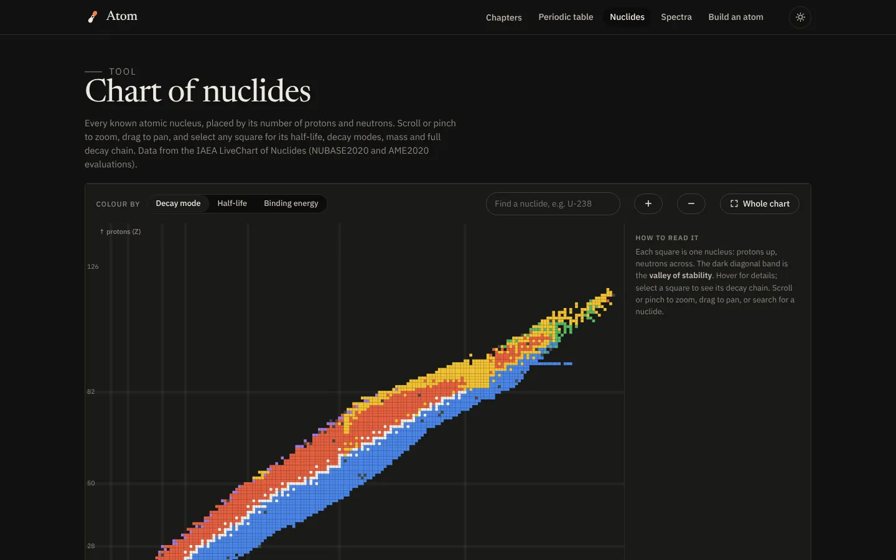
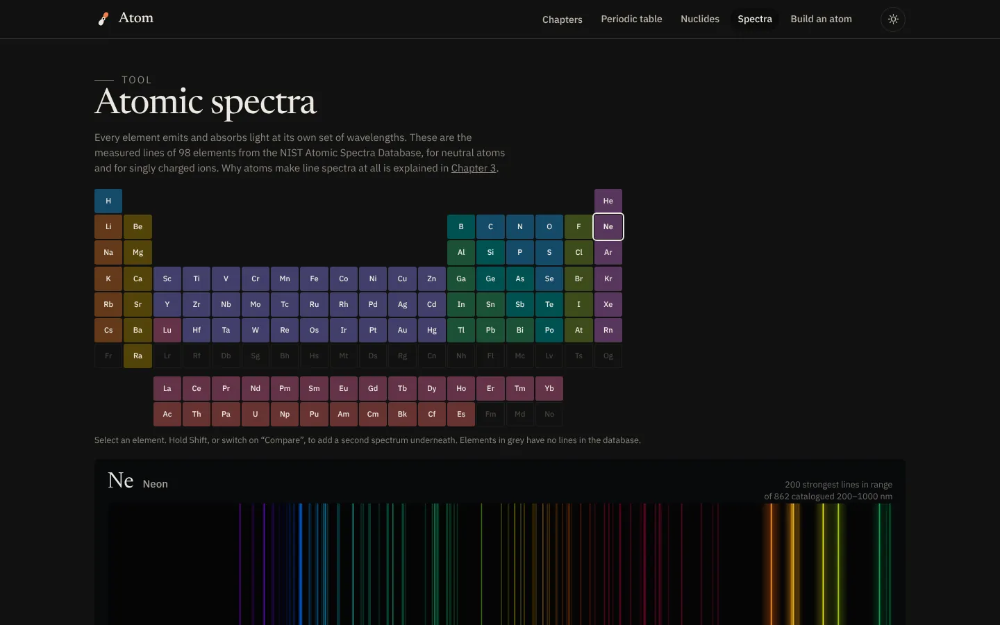
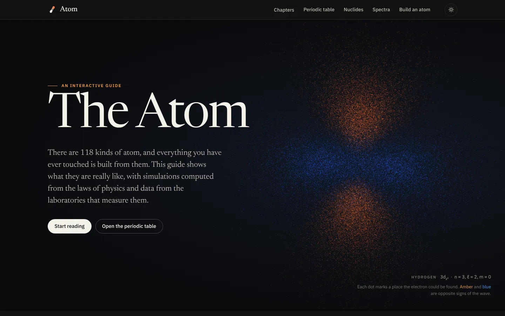
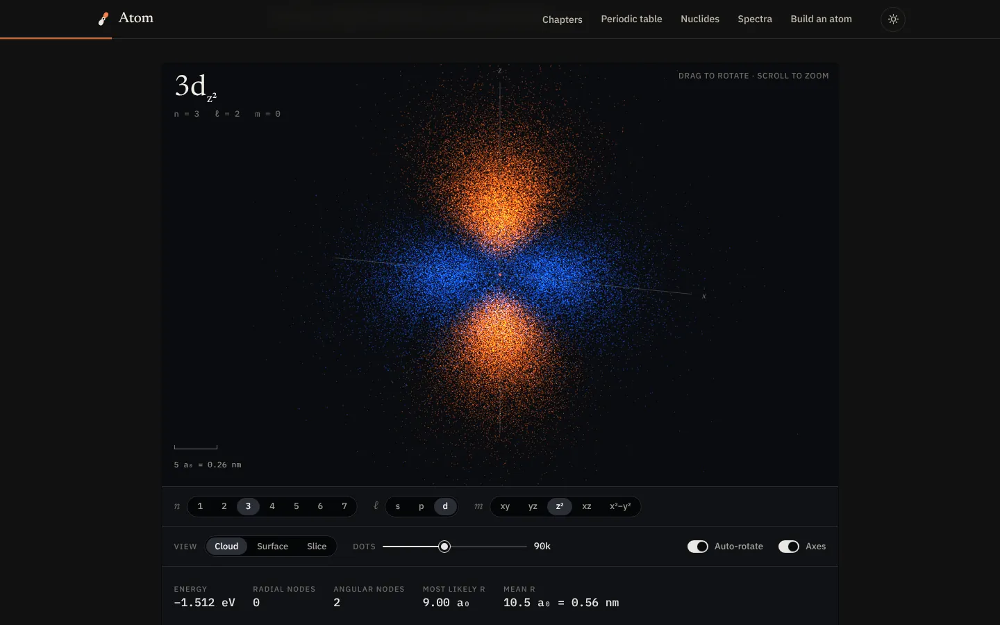
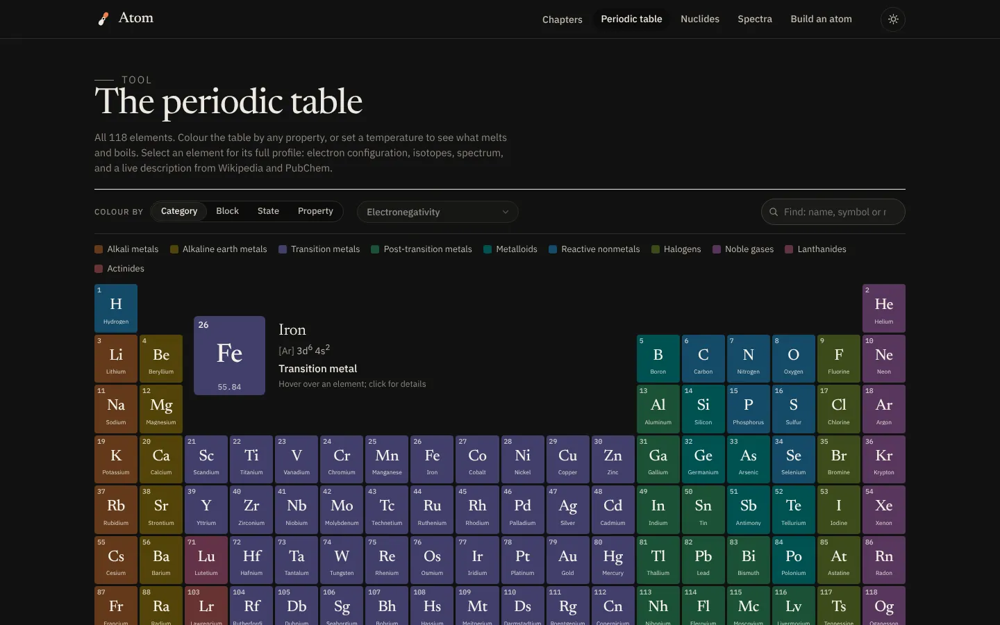
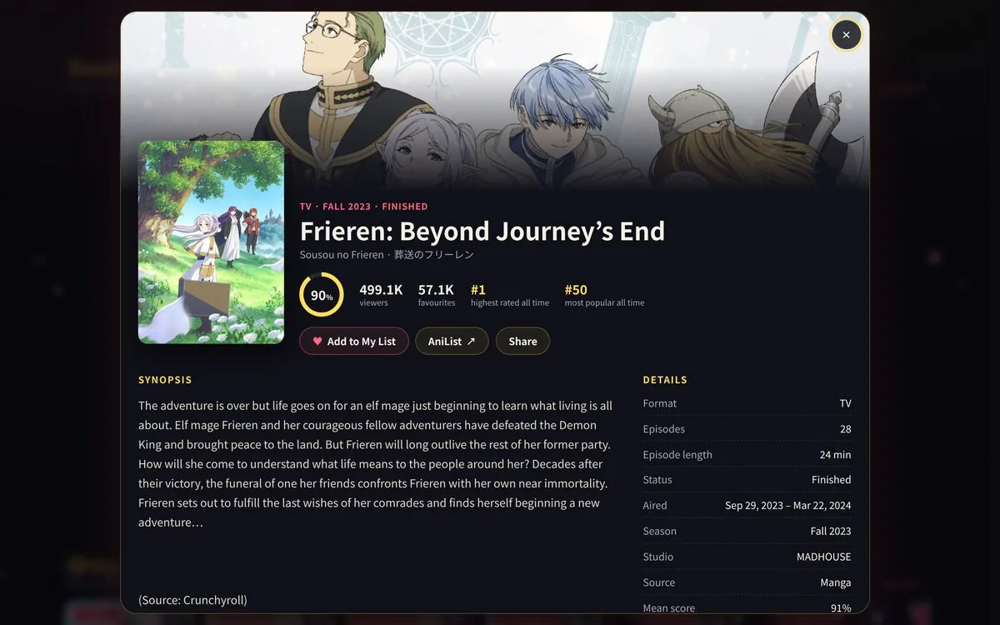
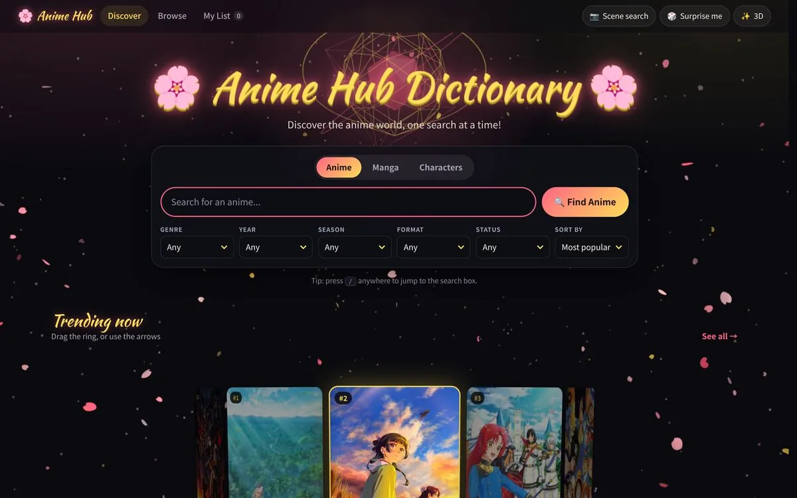
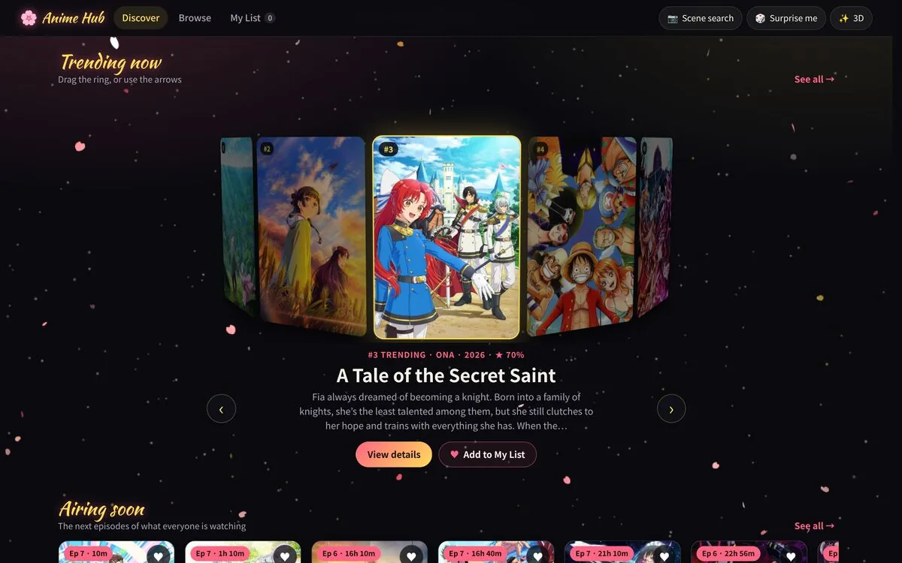

01 — Design · Physics · Code
Atom
An interactive guide
to the atom
0
live physics simulations
0
elements with full profiles
0
nuclides on one chart
a developer who does everything
Showreel · 2026
React · Three.js · WebGL
01 — Design · Physics · Code
An interactive guide
to the atom








02 — Design · Frontend · APIs
Anime Hub Dictionary
3D
FRONTEND
FULL-STACK
MOTION
everything.